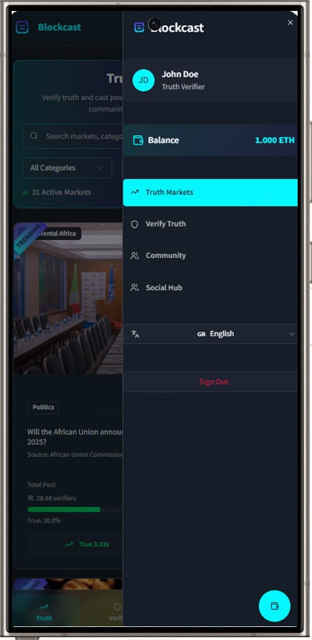
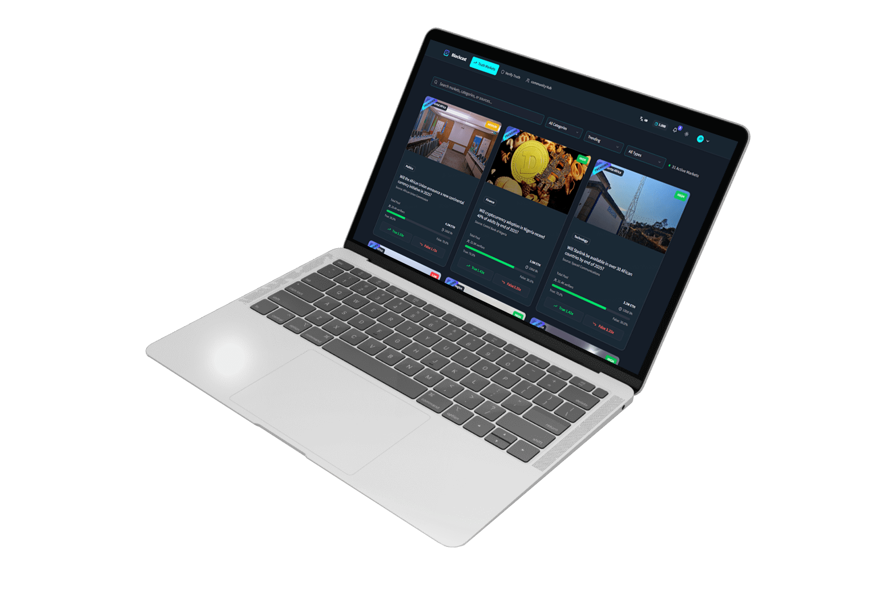

Product Management · Web3 · 2025
Blockcast
A decentralized truth-verification market. Stake on real-world questions, let AI resolve them from credible sources — then challenge any verdict with on-chain evidence.
I owned the product and built the working MVP with AI — defining the market lifecycle, the verifier flows and the dispute economics, then refining each user flow with AI.
Overview
Who decides what's true online? Blockcast turns that question into a market — and settles it with AI, a community of verifiers, and a paper trail on-chain.
Every market is a real-world yes/no question backed by a credible source. People stake on Truth or False; an AI engine cross-references multiple sources to resolve the outcome; and anyone who disagrees can stake HBAR to submit evidence and trigger a community dispute. As product manager I built the MVP with AI and refined every flow with it — from browsing markets to filing a dispute.
An exchange
for the truth.
The same market in your pocket — browse, stake and verify from a phone, with your verifier wallet and balance one tap away.

Anatomy of a market
Four moving parts, one screen.
Open any market and the whole truth-verification machine is on a single page — the pool, the AI verdict, the dispute desk and a blockchain timeline.

A verification pool, with live odds
Each market pools stakes on Truth vs False and prices them as live odds — here, 2.00x each against a $4.2M pool and 28k verifiers, with the split shown in real time.
AI resolves the outcome
An AI engine analyzes multiple credible sources and cross-references data, combined with community consensus, to settle what actually happened — a methodology spelled out on every market.
Disagree? Put evidence on-chain
Stake 0.1 HBAR to dispute a resolution with written evidence and source links. Accepted evidence earns up to 1.0 HBAR plus a quality bonus; good-faith attempts get a partial refund.
A complete on-chain timeline
Every market logs its full history — created, closed, evidence submitted — each event stamped with a wallet address and a transaction hash. Status, contract and all.
The full exchange, on desktop
Browse markets by category — Politics, Finance, Technology — search by source, and sort by what's trending. Every card carries the pool, the verifier count, time to resolution and a confidence badge, so the state of each question reads at a glance.

Product decisions
What makes the model work.
Truth as a market
Prediction-market mechanics turn a fuzzy "is this true?" into priced, stakeable odds anyone can read.
AI + community
An AI verdict drawn from credible sources, kept honest by a community that's allowed to dispute it.
Dispute economics
Real stakes and rewards in HBAR make bad evidence costly and good evidence worth submitting.
Provenance on-chain
Genesis events, closures and evidence are all recorded with wallet addresses and transaction hashes.
One product, two surfaces
A dense Web3 exchange that stays legible from a wide desktop grid down to a single-column phone.
A dark, focused UI
High-contrast cyan-on-navy keeps a data-heavy interface calm, modern and easy to scan.
The result
From concept to a working Web3 MVP.
Blockcast runs end to end — markets you can browse and stake, AI-assisted resolution, an HBAR-backed dispute system and a full on-chain timeline — built as a product, not a pitch deck. I shaped it as product manager and built the MVP with AI, refining each user flow along the way.